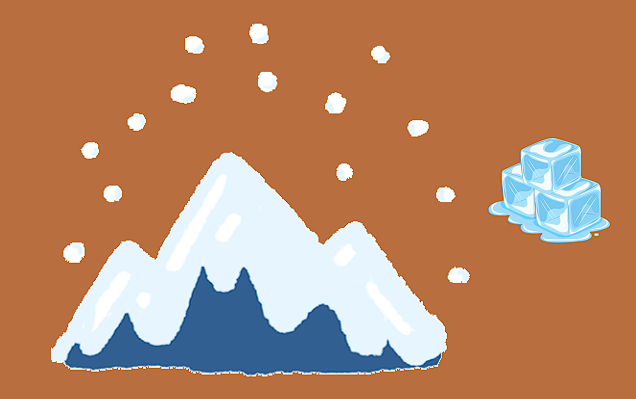

| . . |
Que sait-on du climat du passé ? Au cours des 600 derniers millions d'années, le climat moyen de la Terre a généralement été plus chaud d'une dizaine de degrés par rapport à aujourd'hui. Durant cette longue période, quatre phases relativement froides ont provoqué l'apparition de glaciers plus ou moins étendus, principalement aux pôles mais aussi dans certaines régions tempérées. Au cours des deux derniers millions d'années, alors que le climat était globalement plus frais, la Terre a connu des alternances régulières entre périodes glaciaires et interglaciaires. Ces cycles, initialement courts et fréquents, survenaient environ tous les 40 000 ans.Cependant, depuis un million d'années, les glaciations sont devenues plus longues et plus intenses, atteignant une durée d’environ 100 000 ans. La dernière grande glaciation a culminé il y a environ 20 000 ans et s’est terminée il y a 12 000 ans, marquant le début de l’Holocène, la période géologique actuelle. C'est durant l'Holocène que l’humanité est devenue sédentaire et que les civilisations modernes ont émergé. À l’échelle globale, le climat de l’Holocène a été relativement stable, bien que des variations aient existé, comme l'aridification du Sahara. Aux débuts du deuxième millénaire (XIe-XIIIe siècles), les températures étaient assez élevées, période appelée l’optimum médiéval,suivie d'une tendance au refroidissement entre le XIVe et le XIXe siècles, connue sous le nom de petit âge glaciaire. |
| . . |
reconstitue-t-on le climat du passé ?
Les grands réseaux de mesures météorologiques permettent de connaître l’évolution du climat depuis environ 150 ans. Pour la période antérieure, roches, sédiments, calottes glaciaires, et différents fossiles sont nos principales sources d’information sur le climat du passé, qu’on appelle paléoclimat.On prélève ces archives naturelles dans le sol, les lacs, les tourbières, les océans, ou encore la glace. Peu à peu, les scientifiques ont développé des méthodes de plus en plus précises pour dater ces indices. Certaines archives, comme les cernes annuels de croissances des arbres ou les stries de croissance des coraux, donnent accès à des informations datées à la saison près ! Les enregistrements paléoclimatiques permettent également de caractériser l’activité volcanique, l’activité solaire, les changements d’usage des sols (déforestation et extension des zones cultivées) et la composition atmosphérique connue grâce aux analyses de l’air et des aérosols emprisonnés dans les glaces polaires. |